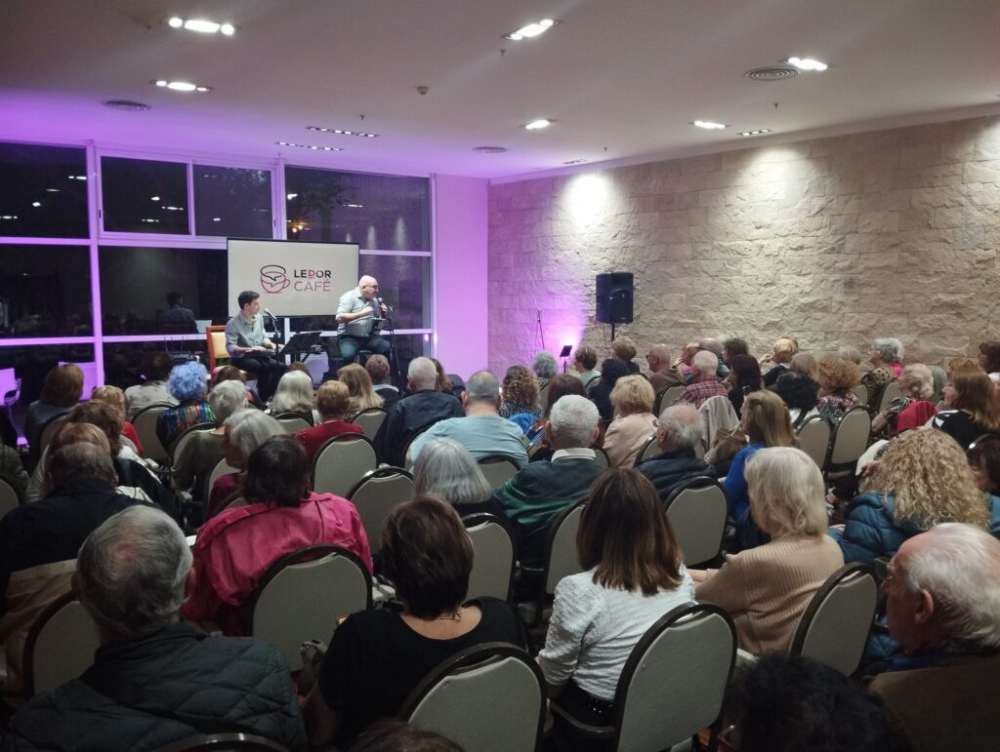
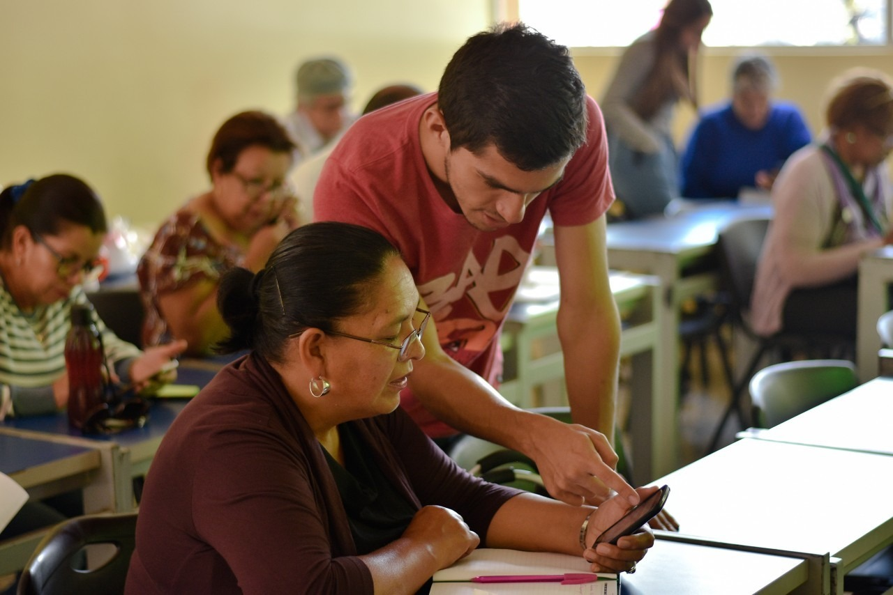
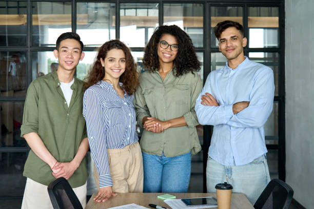

Nuestra Historia: El Puente entre dos Mundos
El inicio de un sueño
Todo comenzó en el invierno de 2015, en una pequeña biblioteca comunitaria de un barrio periférico. Allí, un grupo de estudiantes de sistemas y trabajadores sociales notamos una realidad alarmante: mientras el mundo hablaba de inteligencia artificial y 5G, miles de personas en nuestra comunidad no sabían cómo enviar un correo electrónico o realizar un trámite básico de salud de forma online. Esa brecha no era solo tecnológica, era una barrera que impedía el acceso a derechos fundamentales.

El primer paso
Con tres computadoras donadas y mucha voluntad, abrimos nuestro primer taller de "Inclusión Digital para Adultos Mayores". Lo que empezó como una clase técnica se transformó rápidamente en un espacio de encuentro. Ver a una abuela comunicarse por videollamada con su nieto en el extranjero por primera vez nos dio la señal que necesitábamos: tecnología, en las manos correctas, es una herramienta de amor y dignidad.
Nuestros Valores
Nuestra brújula ética se basa en cuatro pilares fundamentales:
- Equidad Digital: Creemos que la tecnología es un derecho humano, no un privilegio de pocos.
- Empoderamiento: Brindamos herramientas para que cada persona sea dueña de su propio futuro.
- Colaboración: Trabajamos en red; el cambio real nace de la unión entre vecinos, voluntarios y empresas.
- Transparencia: Cada donación y cada hora de voluntariado tiene un impacto trazable y honesto.

Creciendo junto a la comunidad
Para 2018, la demanda nos superó. Gracias al apoyo de voluntarios y pequeñas empresas locales, formalizamos Conexión Raíces como una ONG. Expandimos nuestros horizontes para incluir capacitaciones en programación para jóvenes en situación de vulnerabilidad, dándoles las herramientas para insertar sus talentos en el mercado laboral del siglo XXI.
Hacia el futuro
Hoy, con más de 5,000 egresados de nuestros programas, seguimos convencidos de que el acceso digital es un derecho, no un privilegio. No solo enseñamos a usar una pantalla; construimos ciudadanía, fomentamos la autonomía y acortamos distancias. Nuestra historia recién comienza, y el próximo capítulo lo escribimos junto a vos.
El Equipo

Detrás de cada taller y cada conexión, hay un equipo humano comprometido:
- Dra. Martina Vallejos – Directora Ejecutiva
Especialista en Políticas Públicas y apasionada por la inclusión social.
- Ing. Julián Rossi – Coordinador de Tecnología y Alianzas
Encargado de convertir hardware donado en herramientas de aprendizaje de última generación.
- Lic. Sofía Méndez – Responsable de Comunidad y Voluntariado
El nexo humano que acompaña a cada estudiante y organiza a nuestros tutores.
- Marcos Benítez – Tutor de Programación Jr.
Ex alumno de la fundación y hoy referente técnico para los jóvenes del barrio.
Información Legal
- Razón Social:
- Asociación Civil "Conectando Generaciones" para la Inclusión Digital
- Personería Jurídica:
- Resolución IGJ N° 1928/18
- CUIT:
- 30-71548293-9
- Sede Central:
- Calle Las Araucarias 1420, CABA, Argentina